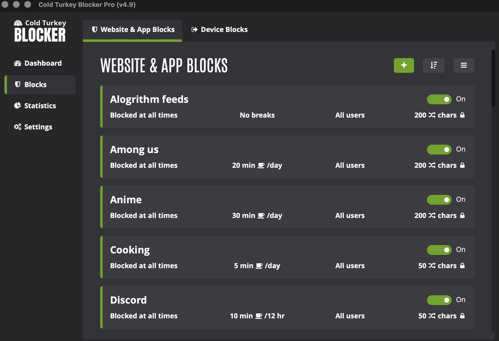
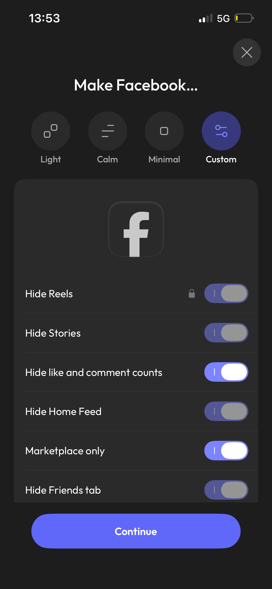
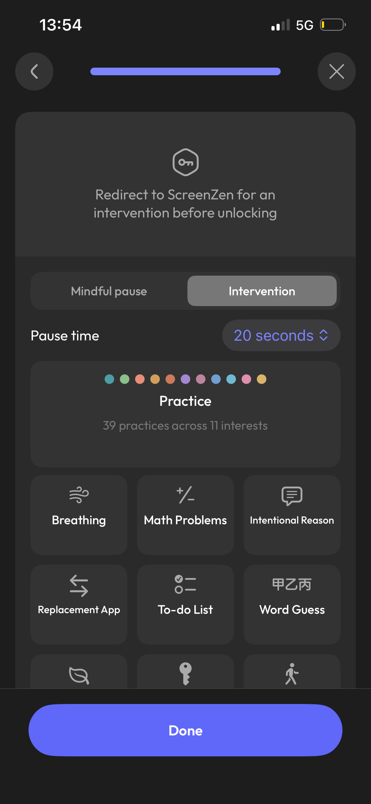
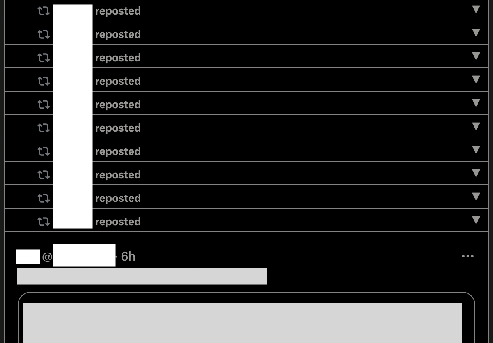
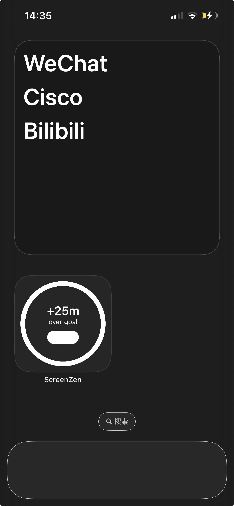
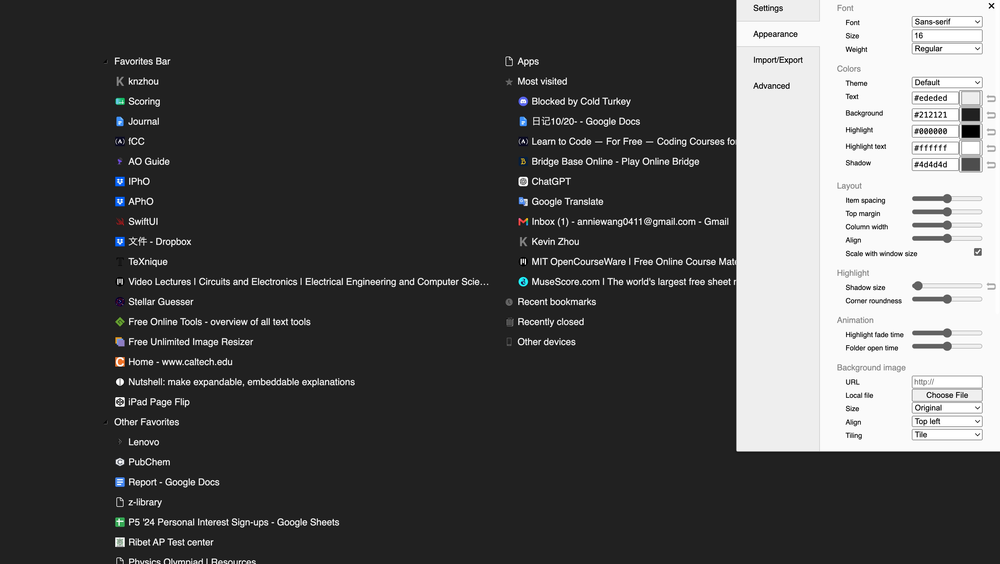
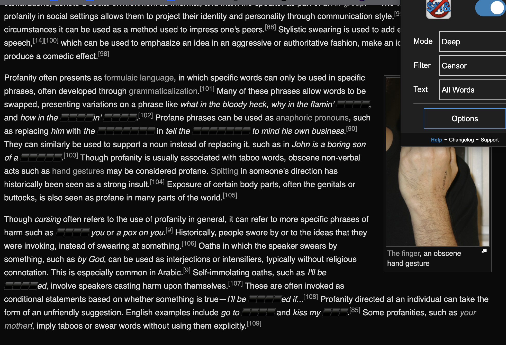

Sep 9 2025, last modified Sep 9 2026
I'll not split out every single aspect but you can trust me all the listed tools are something worthy to be here. General advice can be found at the end.
*Rules of thumb: No subscriptions. Only the most competitive apps I'm aware of. Pricing is recorded at Sep 2026 for one time payments if listed and free otherwise. Find me at anniewang0411@gmail.com for any inquiries/suggestions.
Happy 1st birthday for my tools recommendations!!
Screen time controlling (goats of all goats):
Cold Turkey Blocker, $45 for windows/macOS; and
ScreenZen, the one free donation based screentime app for iOS/ipadOS/macOS/windows.
If you are new to the concept of screentime blocker apps, they mostly work in a way such that 1. You only have a customizable limit of screentime everyday, and 2. They add additional barriers for you to open the app. I strongly recommend them since they've changed my life in an enormously positive and irriversible way — together they threw off my internet addiction which resulted in better sleep, health, academics, and more.
*If you have any problems regarding the usage of Screenzen (e.g how to block certain sites/safari/etc.), inquiry in ScreenZen discord.



Digital decluttering:
Screenzen (again), for iOS and iPadOS apps. In the newest big update in Sep 9th 2026, screenzen gained the ability to declutter facebook, tiktok, instagram, reddit, linkedin, X and youtube such that you can toggle off reels, shorts etc.
SocialFocus, $5 on appstore, free as extension, works on safari and PC websites. Page cleaner browser extension for almost everything in 13 popular platforms, e.g. disable notification and throw off ads for X(twitter), etc. (As of January 2026, you cannot hide “for you” pages anymore, probably fixed by X intentionally.)
Untrap For Youtube, basic version $4 on appstore, free as extension, works on safari and PC website. (The plus version is subscription based so I won't recommend it.) A more specific youtube page cleaner by the same seller with SocialFocus.
X Repost Omitted, extension for hiding reposts on X (twitter). SocialFocus doesn't have this function and I completely migrated my X to PC just for using this extension.

Dumb Phone Launcher, $5, to turn your iPhone homescreen into a “dumbphone”. Notice that there are lots of overpriced apps with similar names, so use the link wisely. If you find the app library annoying, create ~10 empty shortcuts, add them to your homescreen so that you need to swipe ~10 more times before reaching the app library.

Humble New Tab Page, to remove the annoying search bar and to show useful buttons on browser startup.

File managing
Process Feedback, generates detailed reports including writing playbacks, copy-pasting events, typing speed and more for GDocs, a game changer for English teachers to identify plagiarism and/or AI writing for GDocs when traditional “detectors” like turnitin.com or GPTzero are way too easy to bypass and report false positive. Also a handy tool for writers and stats nerds to gain more insights into their writing process. Detailed guides for integrating it into the classrooms are on their website.
Bulk Resize, mass resizing images. Took me less than 10 seconds to resize all 121 images featured in random doodle of around 1600*2000 px to 50% of their original dimension and to webp.
Gillmeister text tools, and I mainly use their remove/replace line break which is a life saver for converting new lines into br elements. Most of my writings on this site were processed this way.
Doc to html converter, lifesaver for someone who don't want to code their footnotes one by one. This document and another footnote-rich writing are processed this way.
Miscellaneous:
Save99, round to whole numbers when shopping on amazon and ebay, like $9.99—>$10.00.
Calories.ai, that one free app for calorie-in-calorie-out counting. (It hasn't been updated for a year, though).
Budget, $9 or $15 for max 6 people. You should get a bookkeeping app especially if you are notably not a millionaire. This is my personal app of choice because the UI is clean and that other apps are generally overpriced. Notice that this does not automatically track your transactions like Copilot, which makes it difficult to migrate to it at first (if you are a maniac like me who would like all past transactions logged into it) but actually discourages purchasing too often and makes you more mindful about purchases. I moved from copilot to it because copilot is too expensive.
Advanced Profanity Filter, filter certain words of your choice on chrome and apple (supports audio filtering as well though I'm unsure whether that works well). I have PTSD and used this to avoid triggering, might come in handy for religious people / those who dislike swearing as well.

Dark Mode, it's advertised for GDocs but works for almost anything unprotected by google, although pictures in docs and pdfs won't look good (pics in sites are still normal). (No need for pictures since you can already tell from my website interfaces XD)
General advice:
“I hope such a tool that helps me do [something on your browser] exists”...
Don't hesitate to search for it because 99% of the time it does. Getting into such a habit helps you improve your digital workspace bit by bit, as all the tools listed here are found in this way except for CTB (which is from a youtube productivity video by Reysu).
How to avoid overpriced appstore apps:
Scroll down in the information page to find details about In-App Purchases without having to download the app. You can use this piece of information to save time comparing prices for different apps.
Some words on electronics usage:
“Most digital products from the biggest companies are designed to be addictive.”
I regarded this saying as merely the matter of “parents have been brainwashed by the social success theory that games are bad but they can't reasonably explain it so they put hopes on this childish vilification of imaginary enemies” when I was about 8. Now that I'm away from my parents' control, I only find it more and more true.
Do you find short videos addictive? Sometimes federal laws require certain settings to be changeable, but designers hide them deep inside the boring index so that the users couldn't be aware of (to get some idea, deep search the iOS settings app. Do you know that you can disable notification previews?). Even worse, sometimes there aren't any choices at all, like the case for short videos in youtube and the annoying iOS app library.
The message is, designers in large companies do try their best to make it easy falling in the rabbit hole while making it hard to go out, because users' addiction simply meant more profit. In the simplest case where users don't purchase anything, they'll still watch more ads.
However, how is it bad to be addicted? After all, after a boring, tedious and unbearable day of work or school, nothing can beat connecting with friends and see how many likes one has received.
Because “if one wants to achieve success, they must get rid of the habit of being addicted to electronics”...? Have you verified this idea yourself? Do you really have unbelievable faith in it? Have you ever questioned why people want to achieve success?
What I'm saying is that getting rid of addiction is not really about “time management” or “self discipline”, but finding solid reasons to keep you doing it even when it's tough, and ways to make it less tough. Knowing why is the former, while screentime apps are the latter, and there's no reason you shouldn't do both because it's the easiest overall (10+10 is much lesser than 1+100 but both combinations have the product 100). What you should never do is to trust your sole willpower in the long run.